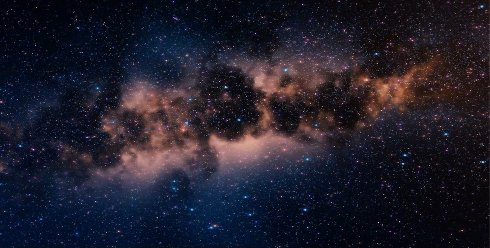

★

Johann Lurf
|
99 min – HD – div. Sprachen Konzept & Realisation: Johann Lurf – T: Nils Kirchhoff – V: sixpackfilm, Wien
|
Freitag 12 okt 21.00 filmmuseum münchen
Zeitreise quer durchs All: Eine verblüffende Kompilation der
Film-Sternenhimmel von 1905 bis in die Gegenwart. Ein etwas
anderer Star-Atlas der Filmgeschichte.
„Unzähliges Foundfootage-Material mit dem Sternenhimmel, in
chronologischer Folge seiner Entstehungszeit – der Abspann,
der alle Filme aufzählt, ist fast fünf Minuten lang. Es ist ein
gründlicher Blick in die Filmgeschichte jener anderen
Sternchen und Stars, die hier wohl zum ersten Mal gebührlich
Aufmerksamkeit bekommen. Der Film ist zugleich auch eine
Geschichte der Special Effects, die immer ausgebuffter werden, je
mehr die Zeit voranschreitet. Ein erhellendes Werk, in dem man
selbst die Entdeckungsreise durch das weite Universum der
Filmgeschichte vollzogen hat. Ganz mit den Mitteln des Kinos.”
(Dunja Bialas)
|
Johann Lurf geb. 1982 in Wien. 2002–2009 Studium an der Akademie der bildenden Künste Wien. Diplom bei Harun Farocki. Johann Lurf lebt und arbeitet in Wien. |
|
Filme Vertigo Rush 2007 – 12 Explosionen 2008 (4. UX) – Zwölf Boxkämpfer jagen… 2009 (5. UX) – Endeavour 2010 – Kreis Wr.Neustadt 2011 (5. UX) – Reconnaissance 2012 (8. UX) – Embargo 2014 (10. UX) – Twelve Tales Told 2014 (10. UX) – Capital Cuba 2015 (11. UX) – ★ 2017
|